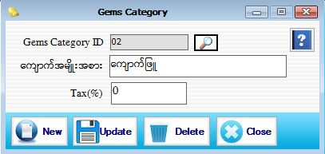

Gem Category Setup

- Master Setup အောက်မှ Gem Category Form ကို ဖွင့်ပါ။
- ကျောက်အမျိုးအစား သတ်မှတ်နိုင်သော Form ဖြစ်သည်။
- Gem Category ID သည် Serial အလိုက် Auto တပ်ပေးပါမည်။
- ကျောက်အမျိုးအစားကို ဖြည့်စွက်ပါ။ Data များ ဖြည့်သွင်းပြီးပါက Save button ကိုနှိပ်ပြီး သိမ်းဆည်းရပါမည်။
- သိမ်းဆည်းပြီးသား Data များအားပြန်လည်ကြည့်ခြင်း၊ ပြင်ဆင်ခြင်းများ ပြုလုပ်ချင်ပါက GemCategory ID ၏ ဘေးတွင်ရှိသောမှန်ဘီလူး button ကိုနှိပ်ပြီး ပြန်လည်ကြည့်ရှုပြင်ဆင်ချင်သော Gem Category အားရွေးချယ်ပြီး ပြင်နိုင်ပါသည်။
- သိမ်းဆည်းပြီးသား ထည့်ပြီးသား Data များကို ဖျက်လိုလျှင် မှန်ဘီလူး button အားနှိပ်ရှာပါ။ ထို့နောက် မိမိ ဖျက်လိုသော Data ကို Delete Button ကိုနှိပ်၍ ဖျက်နိုင်ပါသည်။
- Gem Category အသစ်ထည့်လိုပါက New Button ကိုနှိပ်ပြီး အသစ်ထည့်နိုင်ပါသည်။
- Gem Category Form အား အသုံးပြုပြီးပါက Close button ကိုနှိပ်ပြီး ပိတ်နိုင်ပါသည်။